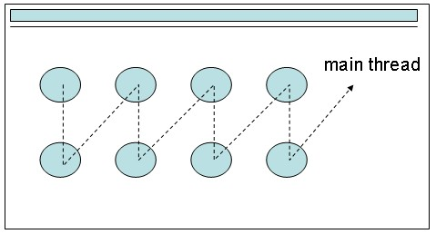
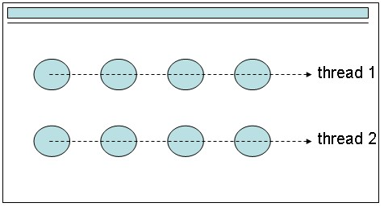

|
|
一
個Java程式啟動後，預設只有一個流程，也就是從程式進入點main開始的流程，這個流程稱之為主執行緒（main
thread），如果你只使用主執行緒要「同時」作某件事，例如，在一個視窗畫面上「同時」畫兩排平行的圓，一排在高度為10，一排在高度為50的地方的
話，程式撰寫起來就有些麻煩，基本上就是先在高度10畫個圓，再迅速於高50畫圓，平移後再於高度10畫個圓，再於高度50畫個圓....依此進行下去：  如果你可以有兩個物件，一個只負責在高度10平移畫圓，一個只在高度50平移畫圓，那麼撰寫程式時就簡單的多了，分別在這兩個物件的「程式執行點」中撰寫個別的流程就可以了，這樣的物件在Java中稱之為「可執行物件」，一個可執行的物件可以建立一個執行緒（Thread）來執行它：  在Java中要實作可執行物件，可以實作Runnable介面，這個介面只有一個run()方法要實作，run()方法就是可執行物件的「執行進入點」，run()方法中實作的內容，就是一個獨立的執行流程。 public class CirclePainter implements Runnable { public CirclePainter(int x, int y, int r, int offset) { .... } public void run() { while(...) { .. 在(x, y) 畫半徑 r 的 圓 ... 平移 offset } } } JVM本身是個虛擬的系統，.class檔案就是其可執行檔，預設上，JVM只安裝一個虛擬的CPU來執行程式，這個虛擬的CPU就是主執行緒，執行流程的程式進入點就是main()方法。 如果你想在虛擬的系統上多裝幾個虛擬的CPU，那就是建立多個執行緒，給每個執行緒可執行的程式碼，然後啟動執行緒。以Java程式碼來示範的話： Thread painterThread1 = new Thread(new CiclePainter(50, 10, 10)); Thread painterThread2 = new Thread(new CiclePainter(50, 50, 10)); painterThread1.start(); painterThread2.start(); 多加裝的虛擬CPU，其所執行的程式碼，就是可執行物件所定義的程式碼，執行的進入點就是run()方法，一旦加裝的虛擬CPU執行完run()方法，這個虛擬CPU就作廢準備回收，也就是執行緒物件一旦執行完run()方法，就不再被使用而等著被垃圾回收，你不可以嘗試重新啟動執行完run()方法的執行緒物件，這會發生例外。 Thread物件啟動後，會執行可執行物件的run()方法，這是定義在Thread的run()方法中，實際上，Thread本身也實作了Runnable介面： public class Thread implements Runnable { ... private Runnable target; .... public void run() { if (target != null) { target.run(); } } ... } 你 也可以直接繼承Thread後，重新定義其run()方法，但需注意繼承有「是一種」（is a）的關係，也就是你繼承Thread後的類別，必然「是一種」執行緒，而且不再能繼承自其它類別，正如繼承Thread後就「是一種」執行緒，會繼承 Thread的目的，通常是為了利用Thread已定義的程式碼。 |